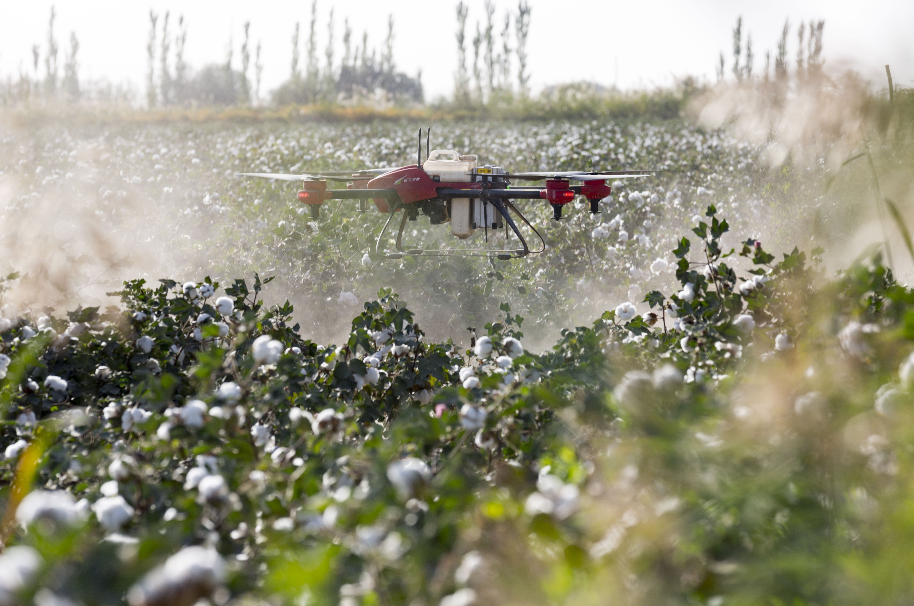
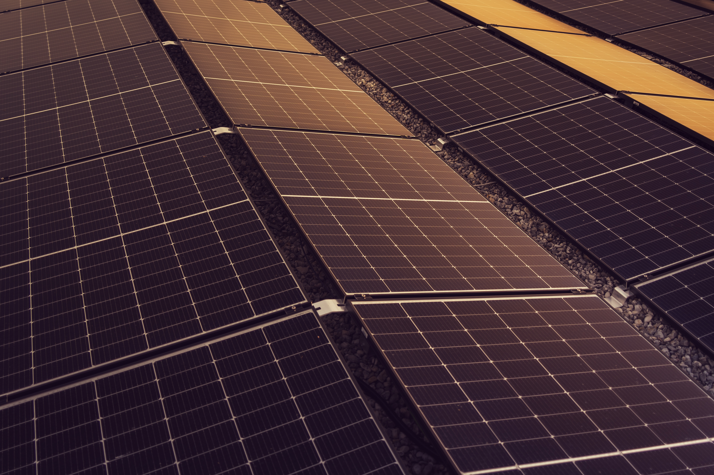
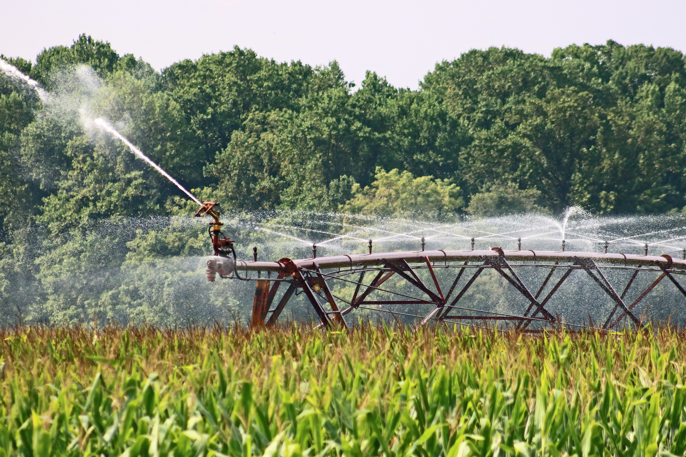

Tecnologias Sustentáveis Aplicadas

Drones Agrícolas
Utilizados para imageamento e mapeamento de alta precisão, detectando focos de pragas sem desperdício de defensivos.

Energia Solar
Captação limpa e inesgotável para abastecer sistemas elétricos e de irrigação, diminuindo os gases poluentes.

Irrigação Inteligente
Sistemas automatizados integrados a sensores de umidade. Economia de até 50% dos recursos hídricos.

Reflorestamento Dinâmico
Recuperação de APPs para fixar o carbono na atmosfera e recriar corredores ecológicos fundamentais.